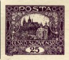
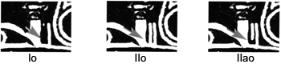
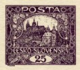

Types à arc
D’après le catalogue POFIS de 2012, les types à arc se rencontrent sur le 25h violet (n° cat. 11) et le 500h brun (n° cat. 25), c’est-à-dire dans le cinquième dessin de l’émission.
Ci-dessous les positions sur lesquelles se rencontrent les types à arc.

Dans les légendes, IIs désigne la spirale du deuxième type (fermée), Ip la barre courte, IIp la longue barre et IIap son sous-type.
Positions
19 positions au total. Le survol de la souris affine l’aperçu ; un clic ouvre l’exemple en plein écran.
88/I
22/II
23/II
76/II
9/II
44/II

48/II

81/I
83/I
6/II

8/II
11/II

12/II
21/II

49/II

72/I

7/II

2/II
78/I